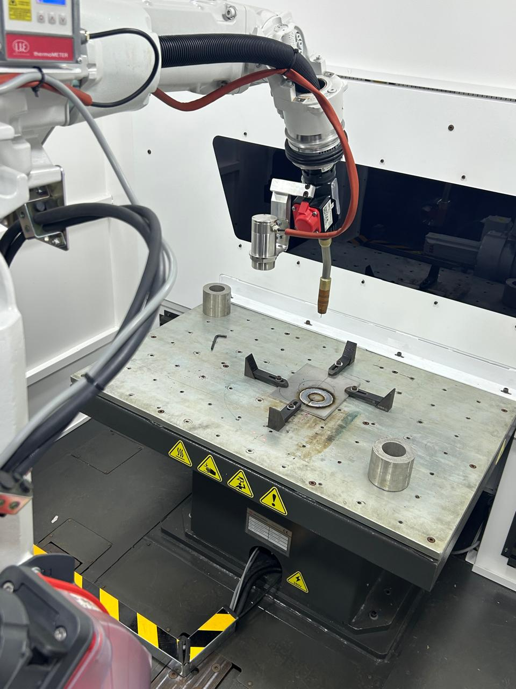
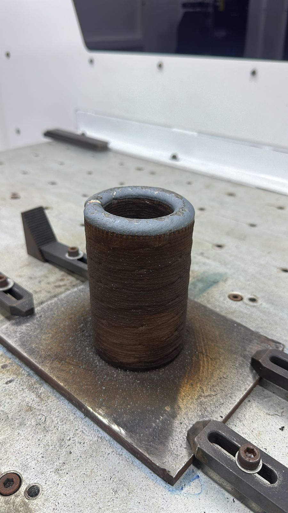

Rogélio Claro Fraga· Desenvolvedor Full Stack · Professor
Antes de começar
Quem aqui já desistiu de alguma coisa no meio do caminho?
Eu desisti de quase tudo. Menos de uma coisa.
Quem é o Rogélio
25 anos, de Araguari/MG
Um rapaz preto numa faculdade majoritariamente branca
O primeiro da família a se formar: ADS, IMEPAC
Dev Full Stack no InovaLayer3D, UFU · bolsa FAPEMIG
Professor no Trilhas do Futuro: 2 turmas, 75 alunos
Criando um produto próprio: o Razor
Para ganhar um lugar de destaque, eu tive que fazer muito mais que todos. E foi isso que abriu as portas.
Formação e trabalho
O currículo, numa linha do tempo
2022 – 2023
IBGE Agente Censitário Supervisor
2024
Freelas primeiros clientes
ago – dez 2025
Abrigo Cristo Rei Scrum Master, ~25 pessoas
2026
InovaLayer3D UFU · FAPEMIG
ago 2026 →
Professor Trilhas do Futuro
Antes do código
Facilidade não é o mesmo que constância
tentei
Edição de fotos
tentei
Criar vídeos
tentei
Vídeo de música
tentei
Manutenção de PCs
parei
~2 anos parado
última chance
Programação
Sempre soube que levava jeito para TI. O problema era perder o interesse e largar.
A virada
Fazer mais do que o curso pedia
Todo tempo livre
Horas vagas, intervalos, aula vaga. Se dava para programar, eu programava.
A liderança sobrava
Foi assim a vida toda. Parei de recusar e assumi a gestão dos projetos.
Abracei o “surtado”
A fome de vencer, de ser o primeiro a se formar, virou motor.
As oportunidades que o curso trouxe
Uma porta abre a outra
Prof. Everton Hipolitoviu talento e falou com a coordenação
Cristiane Lemosa coordenadora recebe o pedido da UFU
Prof. Vinicius LemesEngenharia · UFU, precisava de um programador
InovaLayer3Dbolsa FAPEMIG, desde o último período
Ninguém indica quem ninguém vê.
Eu mostrava o que fazia aos professores, falava das dificuldades e do que podia fazer.
Até inglês eu tive que desenrolar
Meu cliente fala inglês
Os stakeholders do InovaLayer
Vinicius LemesRafaelMoheb
Com o Moheb a reunião é em inglês. Meu nível é B1. Não tinha como fugir: fui, errei e me fiz entender.
Documentação e mensagem de erro: em inglês
Os melhores cursos e respostas: em inglês
Vaga remota para fora: em inglês
Não espere ficar fluente para começar a usar
O que eu acredito
Os 3 pilares de um bom programador
1
Proatividade
Pensar à frente do que o cliente precisa.
2
Resolução de problemas
Somos pagos para resolver o problema dos outros.
3
Sangue nos olhos
Garra para vencer. Sem tempo para indecisão.
Pilar 1 · Proatividade
Pediram um formulário. Entreguei uma plataforma.
O pedido
“Um sisteminha que coleta as informações de um formulário e faz o cálculo.”
O que eu propus
Portal do cliente para pedir orçamento
Central com todos os orçamentos
Proposta em PDF e e-mails automáticos
Painel do engenheiro num app desktop separado, por segurança
Pilar 2 · Resolução de problemas
O cliente não sabe do que precisa. A parte técnica é nossa.
O professor da UFU sabe tudo de soldagem e nada de banco de dados. É para isso que a gente existe.
Pilar 3 · Sangue nos olhos
Não temos tempo para indecisão.
A garra é o que faz você competir e ser melhor.
A real sobre a área
Você não concorre com a sua sala
Concorre com o país
Vaga remota recebe currículo do Brasil inteiro. A régua é a de quem mais se dedicou.
E com a IA
Escrever código ficou barato. Entender o problema, decidir e assumir a responsabilidade, não.
O que te destaca
Projeto no ar, gente que te indica, inglês e saber explicar o que você fez.
Diploma é o mínimo. O que você faz além dele é o que conta.
Um relato real
“Eu corro atrás de estágio depois.”
Alunos da UFU
Deixaram o estágio para o fim do curso. Quando chegou a hora de procurar, não tinha mais estágio.
Começaram a desanimar. Alguns já se perguntam se valeu a pena investir na área.
Não por falta de talento: a área está muito concorrida.
A IA já faz as tarefas que antes iam para o estagiário
Quanto mais a IA escreve, mais cobram fundamento: lógica, banco, HTTP, por que o código funciona
E a sua individualidade: o que você pensa, o que só você entrega
O último período é tarde.Comece agora, no período em que você está.
Projetos
O que eu construí, e o que deu errado
+1.000
commits em 2026
5
sistemas em uso
75
alunos usando um deles toda semana
Para cada projeto: o que faz · como funciona · os erros que eu corrigi

InovaLayer3D · UFU · FAPEMIG
Impressão 3D de metais
Manufatura aditiva por deposição a arco (WAAM)
Um robô de solda “imprime” a peça camada por camada, com arame de metal. Eu fiz o sistema que diz quanto ela custa, em cima da metodologia dos doutores da UFU, e ajudo a melhorar o software que fatia a peça.
no ar · inovalayer.com.br

InovaLayer3D · como funciona
Do pedido do cliente à proposta em PDF
Clientepede o orçamento no site e manda o arquivo 3D
WireArc ILo engenheiro fatia a peça em camadas
Cálculo do custometodologia dos doutores da UFU
Engenheirorevisa e aprova no app desktop
PropostaPDF por e-mail para o cliente
O que entra no preço
Arame de metal+Gás de proteção+Máquina e energia+Chapa base+Serviços extras=Preço final
Bate com a planilha da UFU em 24 de 24 itens, erro ≤ 0,0024%.
WireArc IL · o fatiador da InovaLayer
Do modelo 3D ao caminho do robô
Modelo 3Darquivo STL da peça
Fatiamentocorta a peça em camadas
Trajetóriao caminho da tocha em cada camada
G-codeas instruções para o robô
Orçamentoos dados vão direto para o cálculo
Como
PythonPyQt5PyVista (3D)GPU NVIDIA
App desktop criado pelo Paulo Pinheiro. Eu ajudo com melhorias e liguei ele ao orçamento.
A barra mostrava 100% travado com o cálculo ainda rodando → progresso real
A GPU não rodava de verdade no Windows → corrigido